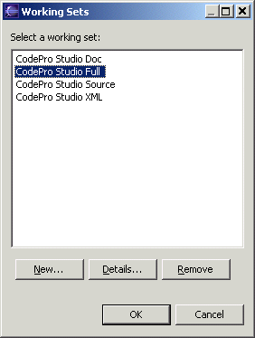
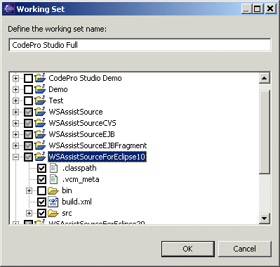

Working SetWorking sets are simply pre-defined collections of arbitrary resources that can be used for various tasks such as:
Creating or Editing a Working SetThe Working Set dialog shows all of the working sets know to the system and allows one to be selected. The "New" button is used to create a new working set; the "Edit" button is used to edit an existing working set; and the "Remove" button is used to delete a working set.  The Working Set Details dialog is used to define or edit the contents of either a new or existing working set. All of the projects in the system are shown a tree list. Any combination of resources may be selected at any granularity. When you are done, click the "OK" button to save the working set.  |